Tree-service-specific workflows
ArborOps understands estimate visits, quote progression, jobs, work orders, crews, job sites, schedules, route groupings, time tracking, attendance, and daily field execution.
Built from Odoo 19. Rebuilt for tree service operations.
ArborOps manages estimates, work orders, jobs, routing, calendar operations, attendance, crews, maintenance, employee tools, and field execution. Olive adds a secure AI layer on top of that system so managers and employees can ask natural questions, get recommendations, create reminders, schedule work, and respond to emergencies.
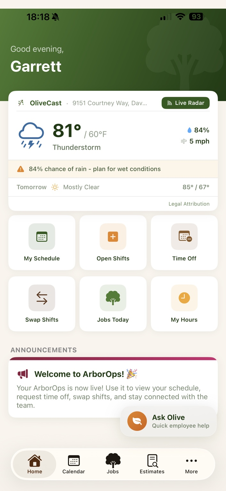
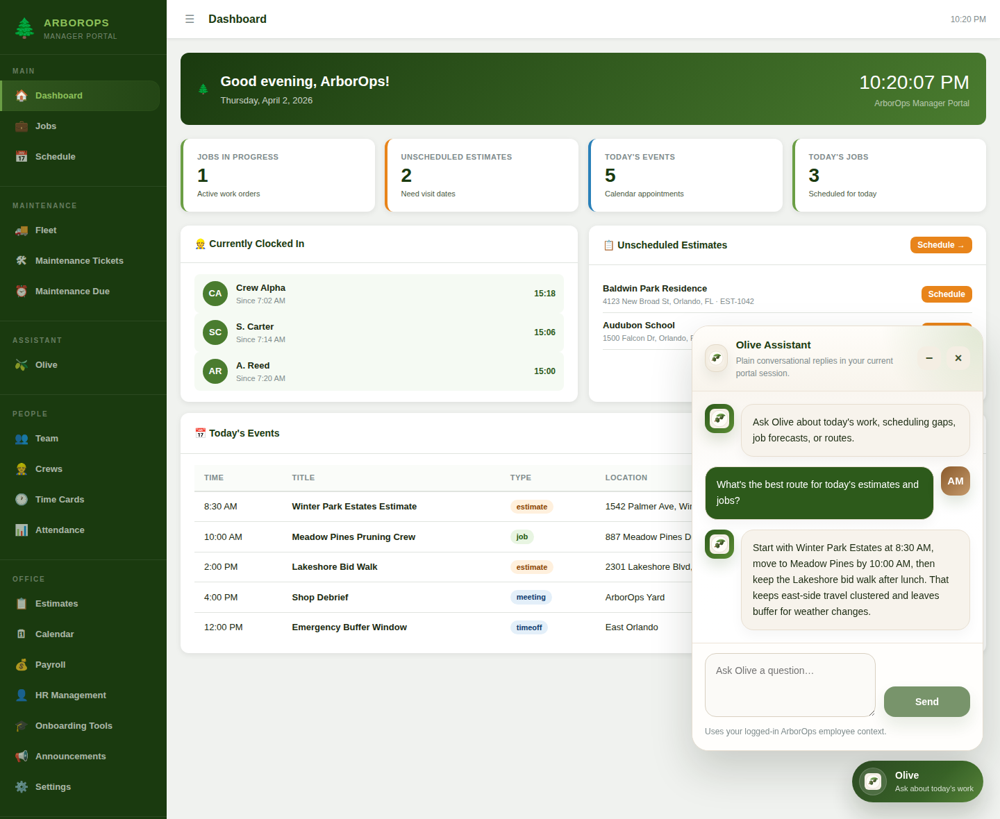
Overview
ArborOps understands estimate visits, quote progression, jobs, work orders, crews, job sites, schedules, route groupings, time tracking, attendance, and daily field execution.
The same operational platform supports mobile employees in the field and managers in the portal, with shared business logic, shared job context, and shared assistant intelligence.
Olive summarizes, recommends, forecasts, routes, reminds, schedules, and supports emergency workflows using live ArborOps context and real company data.
Native mobile app
The mobile app was designed as a true operations product, not a generic wrapper. It uses ArborOps greens, warm orange actions, soft cream panels, rounded iOS-first cards, and a floating Ask Olive surface that appears across the product.
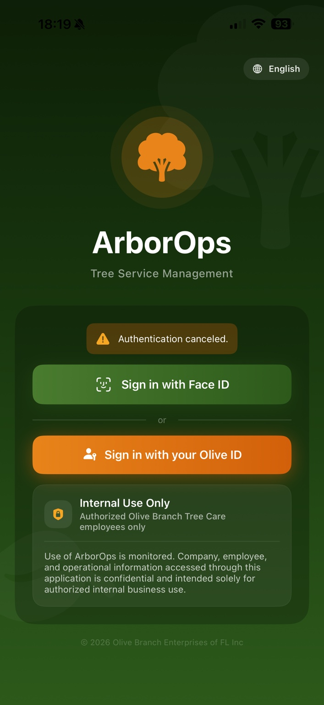
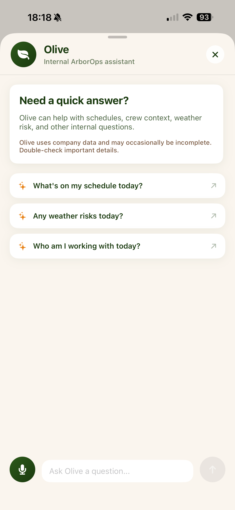
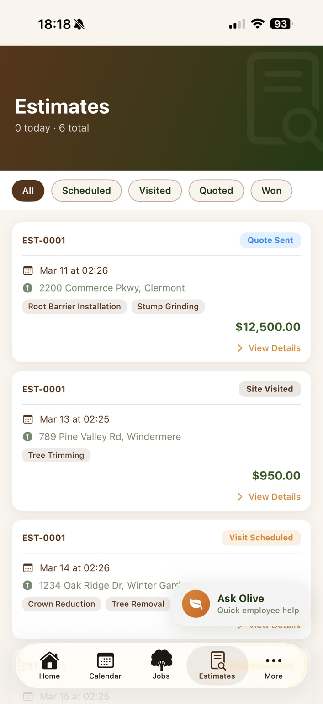
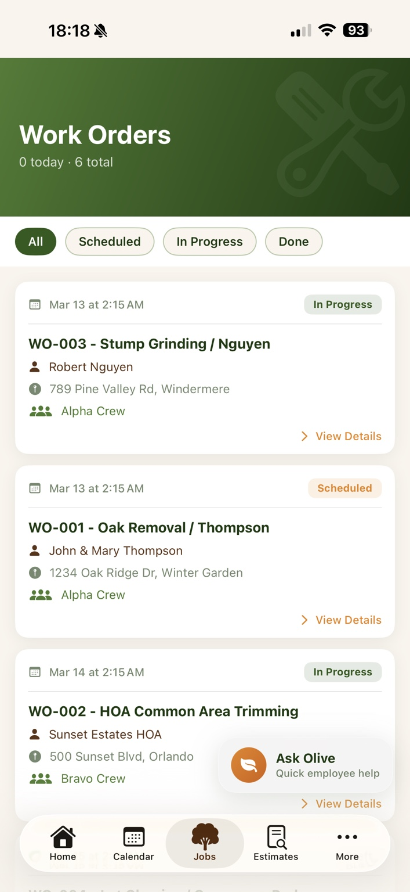
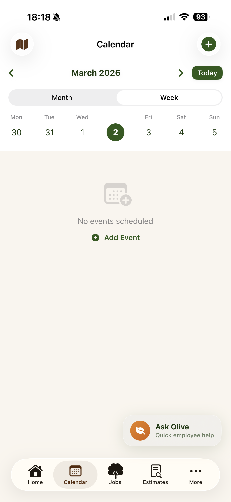
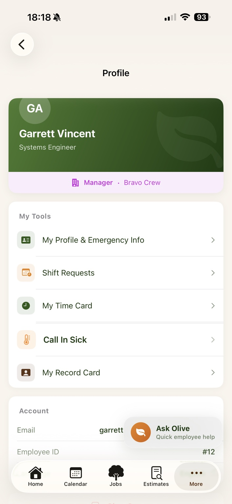
ArborOps surfaces weather directly in the mobile experience so daily work can be evaluated against real field conditions. That includes current temperature, wind, rain probability, forecast outlook, and operational risk guidance such as “plan for wet conditions.”
Olive is woven into the app, not hidden in a menu. The floating Ask Olive launcher gives employees quick access to schedule context, weather risk, crew information, follow-up help, and voice-driven questions.
Manager portal
The portal was reshaped from generic Odoo navigation into a manager-facing operations shell. Olive exists both as an always-available floating assistant and as a full portal page, making the assistant part of daily management rather than a side feature.
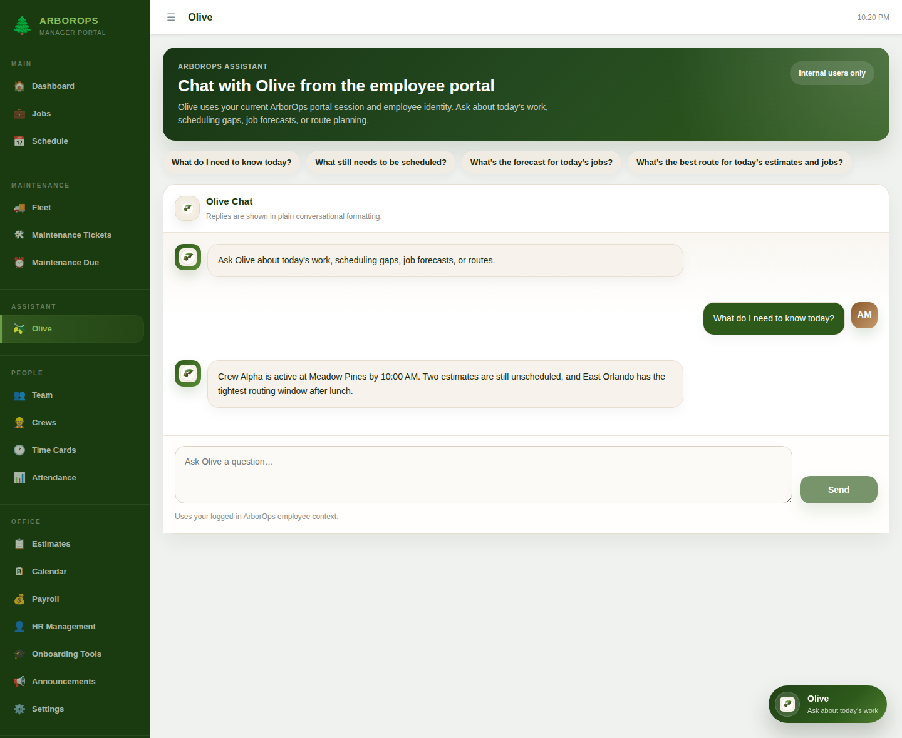
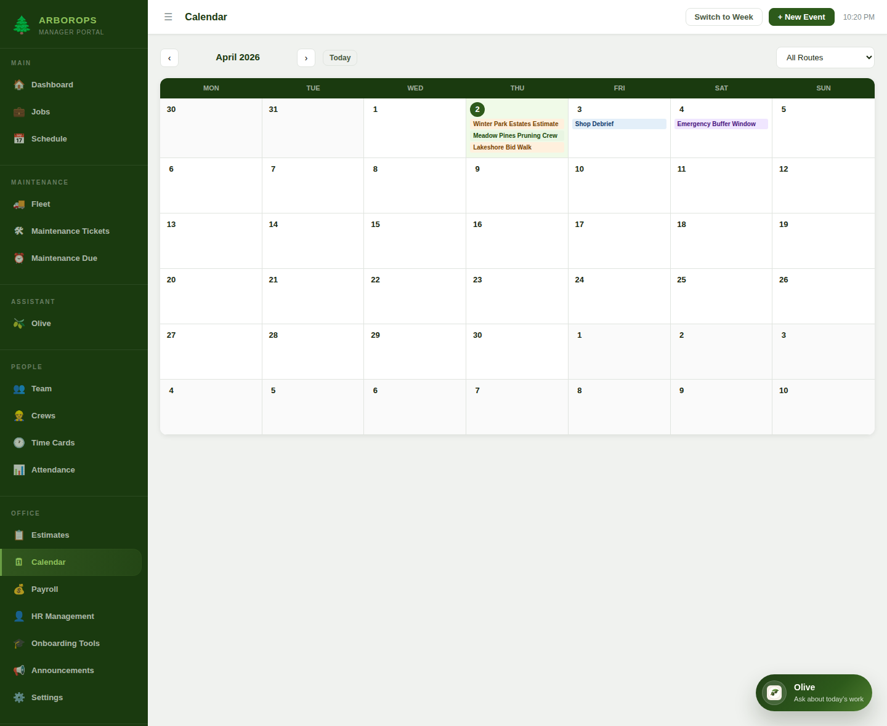
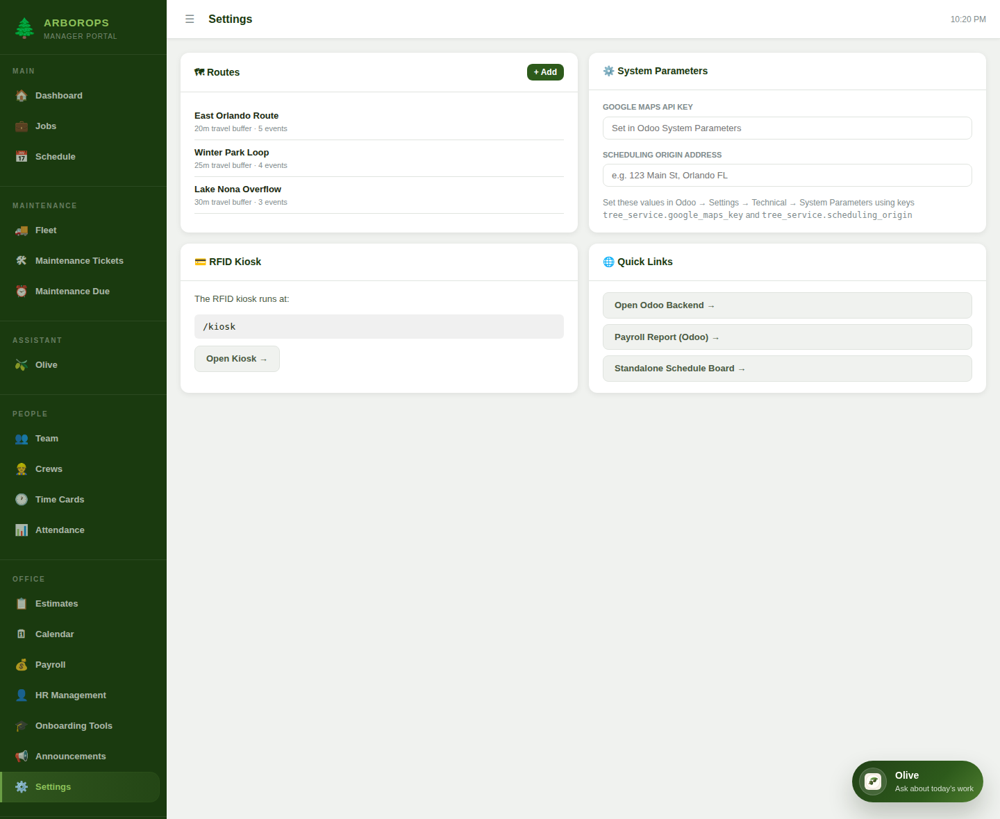
Managers can immediately see jobs in progress, unscheduled estimates, today's events, today's jobs, and active crew time.
The portal supports route filters, travel buffers, and region-based planning so calendar decisions are grounded in actual geography.
Olive lives inside the portal shell and can respond to schedule, route, and forecast questions with plain-language recommendations.
Olive AI assistant
Answers “What do I need to know today?” using live jobs, calendar items, crews, announcements, and manager-specific scheduling context.
Surfaces unscheduled jobs, pending estimates, and missing crew assignments so managers can act on backlog without hunting through multiple screens.
Uses schedule anchors, geocoding, and clustering logic to recommend what should be scheduled next and in what order.
Understands work-specific forecast questions and direct location questions like “What’s the weather in Clermont tomorrow morning?”
Creates live reminder records inside ArborOps so follow-ups become actionable work instead of forgotten notes.
After confirmation, Olive can schedule jobs and estimates through live backend endpoints with concrete date, time, and crew assignments.
Integrated with Azure Speech so Olive can listen and speak in the iPhone app with a natural assistant experience.
Olive is available in both the mobile app and manager portal so the same assistant supports field employees and office staff.
Emergency response workflow
This is one of the most important parts of the system because tree service work is high-risk. ArborOps does not stop at operations management — it also supports real field safety and emergency response.
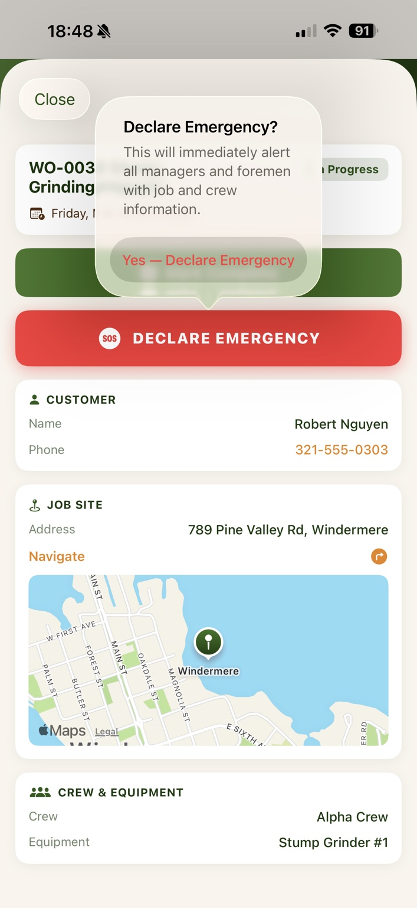
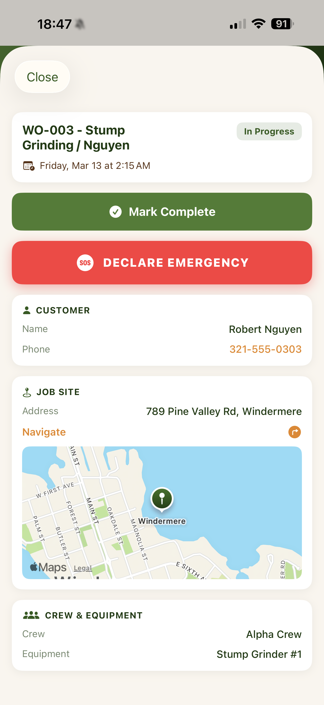
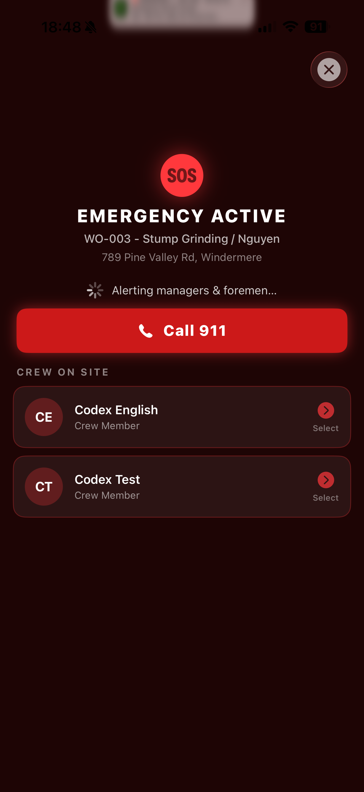
As soon as emergency is declared, the system alerts managers and foremen with job and crew context so response does not depend on manual calls alone.
Emergency workflows can surface the employee’s emergency contact, blood type, and critical medical notes so decision-makers have information fast.
The emergency screen is tied to the active work order and site, so responders know exactly where the incident is happening and who is on site.
Odoo transformation
Odoo 19 started as a generic business platform. Out of the box, it did not understand tree service estimates, crew routing, job-site context, weather-aware scheduling, employee emergency data, or an integrated assistant experience.
We converted it into ArborOps: a vertical operations product with native jobs, estimates, work orders, crews, routes, maintenance, time cards, attendance, calendar operations, emergency workflows, employee tools, portal access, and assistant APIs.
Instead of employees moving between an ERP, weather apps, maps, notes, scheduling calls, and separate safety workflows, they now work inside one operating system with an assistant that understands the business.
We introduced estimate visits, quote progression, job conversion, job-site addresses, work types, route context, crew assignments, scheduling states, and role-scoped visibility.
We created a branded mobile experience and a manager-focused portal so employees and office staff can work from tools that fit actual tree service operations.
We added endpoints for Olive context, reminder creation, scheduling preview and execution, portal proxying, and role-aware assistant access instead of treating AI as an afterthought.
Recommendation logic uses backlog queues, geocoding, distance grouping, existing scheduled work, route anchoring, and conversational confirmation to turn human intent into scheduling actions.
We connected work to environmental conditions and location-aware planning so managers can ask operational questions in plain language and get useful answers tied to real work.
We extended the system beyond operations to include field safety workflows, manager alerts, medical context, and job-aware escalation — an uncommon capability in standard ERP products.
Architecture
Base ERP transformed into a tree service operating system with custom jobs, estimates, crews, scheduling, routes, emergency workflows, portal APIs, and Olive action endpoints.
Olive’s workflow engine handles intent routing, scheduling logic, weather lookups, route reasoning, reminder creation, and backend action calls.
Used for natural language responses, assistant behavior, voice interaction, and secure authenticated assistant access from the app.
Open-Meteo provides forecast and geocoding support, while route-aware planning and clustering logic help optimize schedules around geography and timing.
Bottom line
This project shows how AI becomes valuable when it is tied directly to the workflows, constraints, safety needs, and operating model of a real business. We did not just theme an ERP. We reshaped Odoo into a tree service operations platform, then added Olive as a secure conversational layer that can inform, recommend, and act.